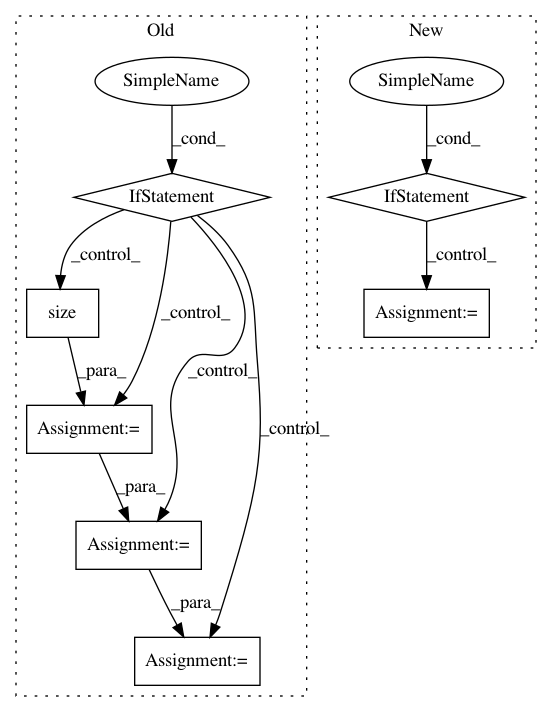

cc80175c2704c0dbbfe908f6b678c84ef1741a56,onmt/Models.py,Encoder,forward,#Encoder#Any#Any#,28
Before Change
def forward(self, input, hidden=None):
emb = self.word_lut(input)
if hidden is None:
batch_size = emb.size(1)
h_size = (self.layers * self.num_directions, batch_size, self.hidden_size)
h_0 = Variable(emb.data.new(*h_size).zero_(), requires_grad=False)
c_0 = Variable(emb.data.new(*h_size).zero_(), requires_grad=False)
hidden = (h_0, c_0)
outputs, hidden_t = self.rnn(emb, hidden)
return hidden_t, outputs
After Change
self.word_lut.weight.copy_(pretrained)
def forward(self, input, hidden=None):
if isinstance(input, tuple):
emb = pack(self.word_lut(input[0]), input[1])
else:
emb = self.word_lut(input)
outputs, hidden_t = self.rnn(emb, hidden)
if isinstance(input, tuple):
outputs = unpack(outputs)[0]
return hidden_t, outputs
In pattern: SUPERPATTERN
Frequency: 3
Non-data size: 7
Instances
Project Name: OpenNMT/OpenNMT-py
Commit Name: cc80175c2704c0dbbfe908f6b678c84ef1741a56
Time: 2017-03-22
Author: bryan.mccann.is@gmail.com
File Name: onmt/Models.py
Class Name: Encoder
Method Name: forward
Project Name: asappresearch/sru
Commit Name: faf3aa876462323f2fa721ebd633752d6489808f
Time: 2020-09-18
Author: taolei@csail.mit.edu
File Name: sru/modules.py
Class Name: SRU
Method Name: forward
Project Name: maciejkula/spotlight
Commit Name: 7a82079d10379287ba4e6e42e21b5b3ce8f541bc
Time: 2017-07-13
Author: maciej.kula@gmail.com
File Name: spotlight/sequence/implicit.py
Class Name: ImplicitSequenceModel
Method Name: fit